Сразу оговорюсь, для кого это
Если вас в целом устраивает, как вы себя чувствуете и как выглядите, дальше можно не смотреть. Ничего страшного не происходит.
Это для тех, кто уже сказал себе: так больше не пойдёт. И кто пробовал решить сам, и не вышло.
У одних живот, который трясётся при ходьбе. Наклоняетесь и не видите собственный пупок.
Шнурки завязываются с усилием, и это раздражает сильнее всего, потому что мелочь.
У других наоборот: руки как были тонкими, так и остались. Плечи узкие, футболка висит, и сколько ни ходишь в зал, ничего не меняется. И там, и там футболку снимать не хочется, а на общем фото встаёте вполоборота.
Есть вторая часть, о которой говорят реже, но которая мучает сильнее. Встали утром и уже устали. К вечеру не остаётся ни на что: ни на детей, ни на жену, ни на себя.
Ребёнок зовёт играть, а сил нет, и вы придумываете отговорку.
Что с вами происходит
Дело не в том, что вы набрали вес или не можете набрать массу. У вас запущена цепная реакция, и она идёт сама по себе.
Стресс, недосып и тренировки без восстановления держат кортизол высоким. Он подавляет тестостерон — это физиология, а не фигура речи. Тестостерон ниже, тело хуже строит мышцы и легче их теряет. Мышц меньше, обмен падает. То питание, которое пять лет назад работало, теперь откладывается.
Цепь замыкается: то, чем всё закончилось, стало причиной следующего круга.
Это не приговор. Снижение веса на 5–10% поднимает тестостерон на 10–20%. Просто пока вы правите не ту точку, круг продолжает крутиться.
Я называю эти точки ползунками. Их семь.
Три видимых: нагрузка, питание, восстановление. С них все начинают чинить себя сами.
Четыре невидимых: ЖКТ, биохимия крови, восстановление ЦНС, БАД-фон. За каждым стоит показатель, который можно измерить. Не образ, а цифра в анализе.
Достаточно одной закрытой точки, чтобы встало всё остальное. Цепь рвётся в самом слабом звене, а какое слабое, снаружи не видно почти никогда.
Три верхних ползунка двигаются под ваше состояние: выспались или нет, аврал или спокойная неделя.
Поэтому то, что вы пробовали, не сработало
Вы правили питание и тренировки. Это две точки из семи. Остальные пять никто не трогал, а четыре из них вообще не видно ни в зеркале, ни на весах.
Воля работает, но при высоком кортизоле и низком тестостероне она даёт вдвое меньше отдачи. Вы тратите те же усилия, получаете половину результата, а потом списываете это на себя.
Обычные мужчины с обычной жизнью
Разный возраст, разный график — у каждого была своя закрытая точка. Ни один из них не нашёл бы её сам, потому что искать надо было не там, где болит.
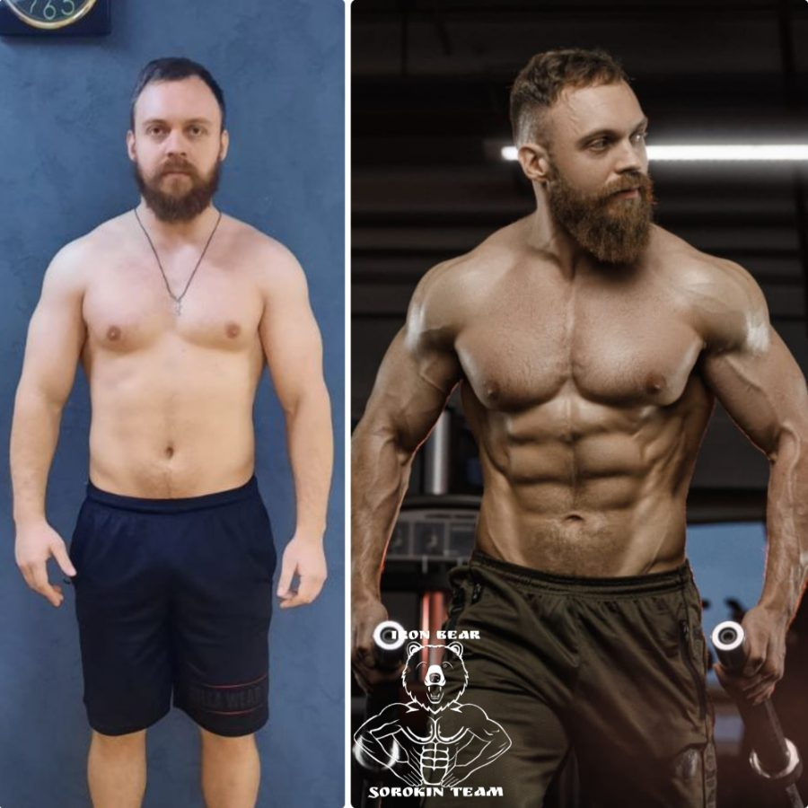
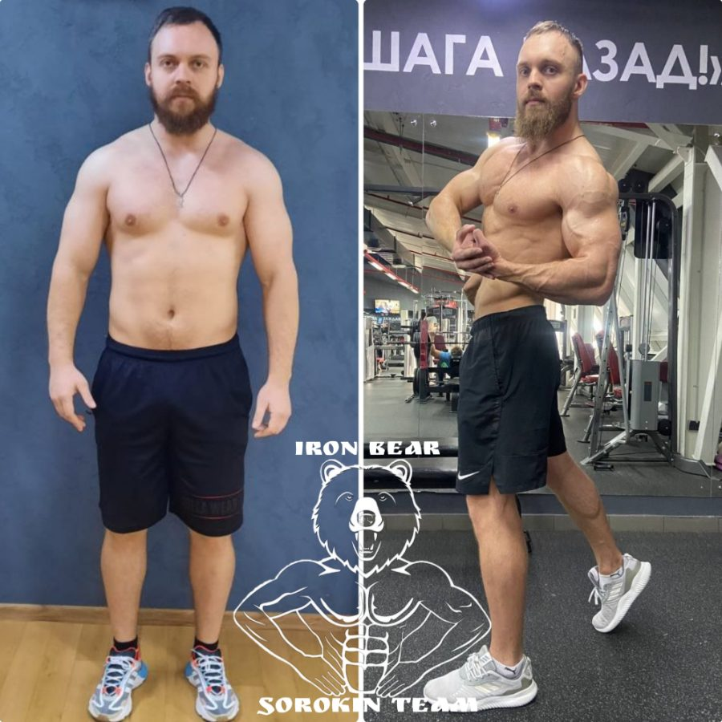
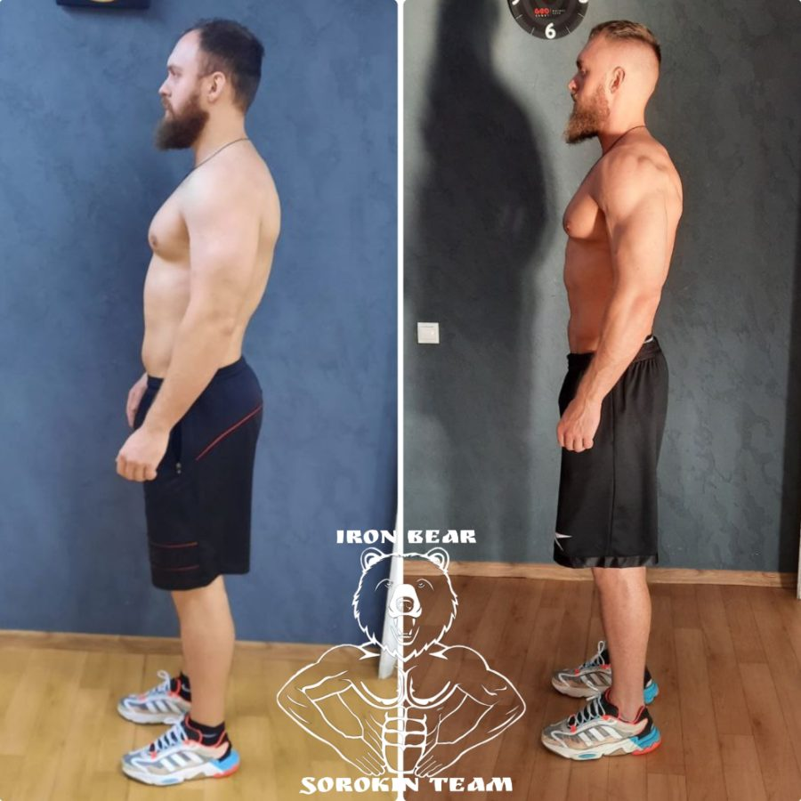
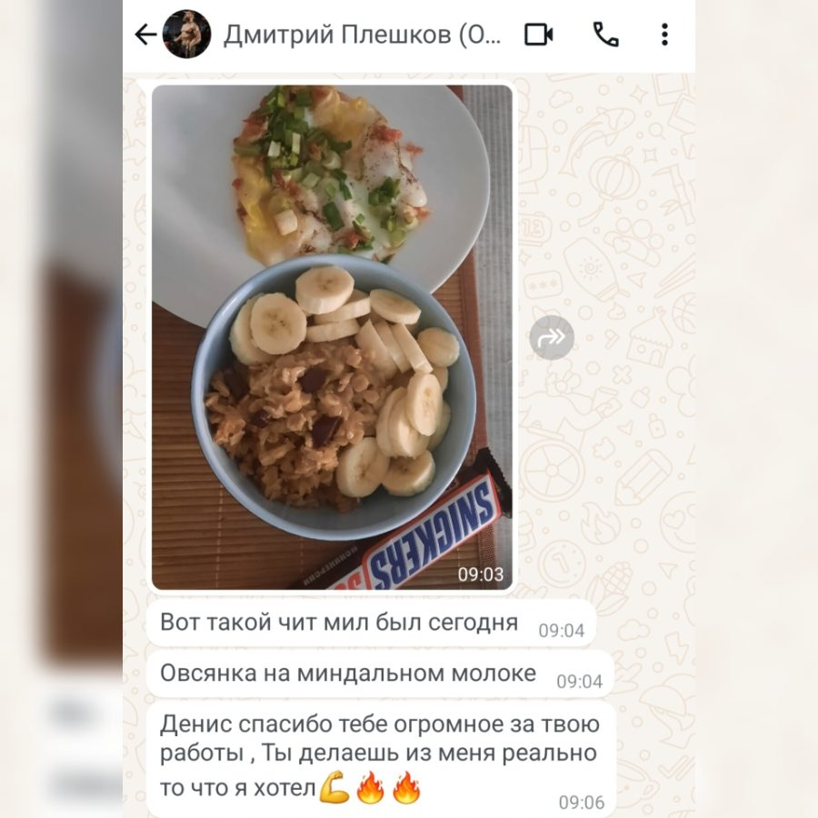
Отчёты каждый день, план правили по ходу. Тело наконец начало строить: ушёл живот, плюс 2 см в плечах.
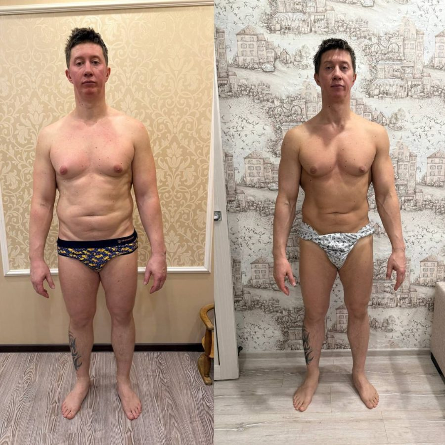
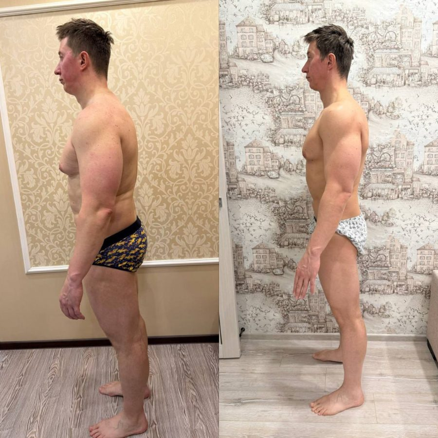
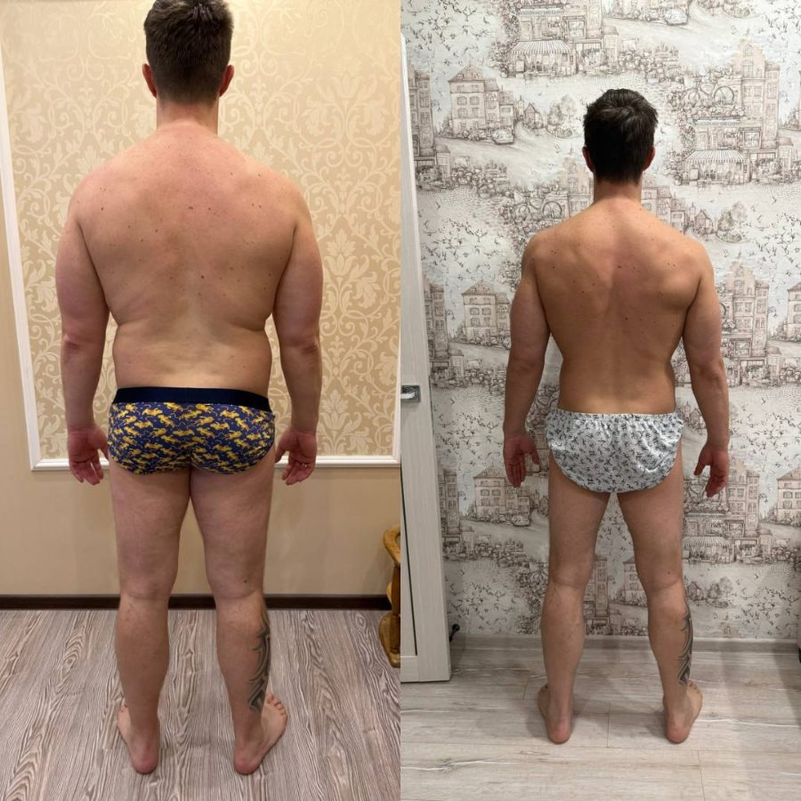
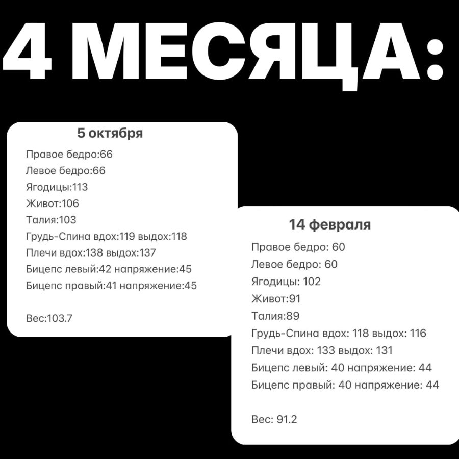
Весил 104 кг и считал, что у него лишний жир. Первое, что сделали — ревизия ЖКТ. Половина «лишнего веса» оказалась воспалением и отёком. Убрали причину, и тело ответило за первые же недели.
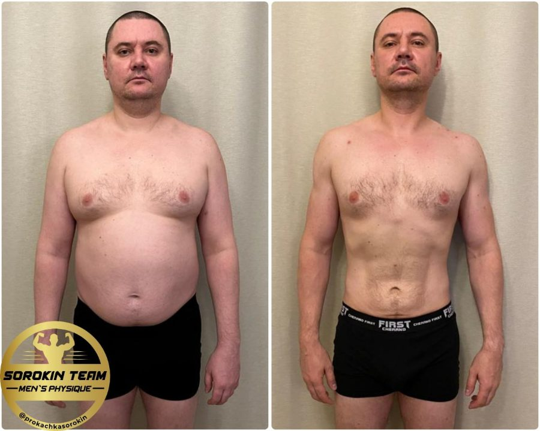
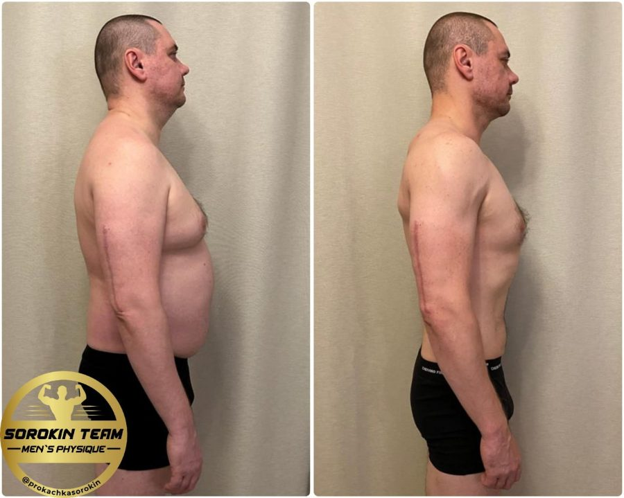
Постоянные разъезды по странам, режима нет в принципе. В тяжёлые поездки снижали обороты, в спокойные периоды нагружали.
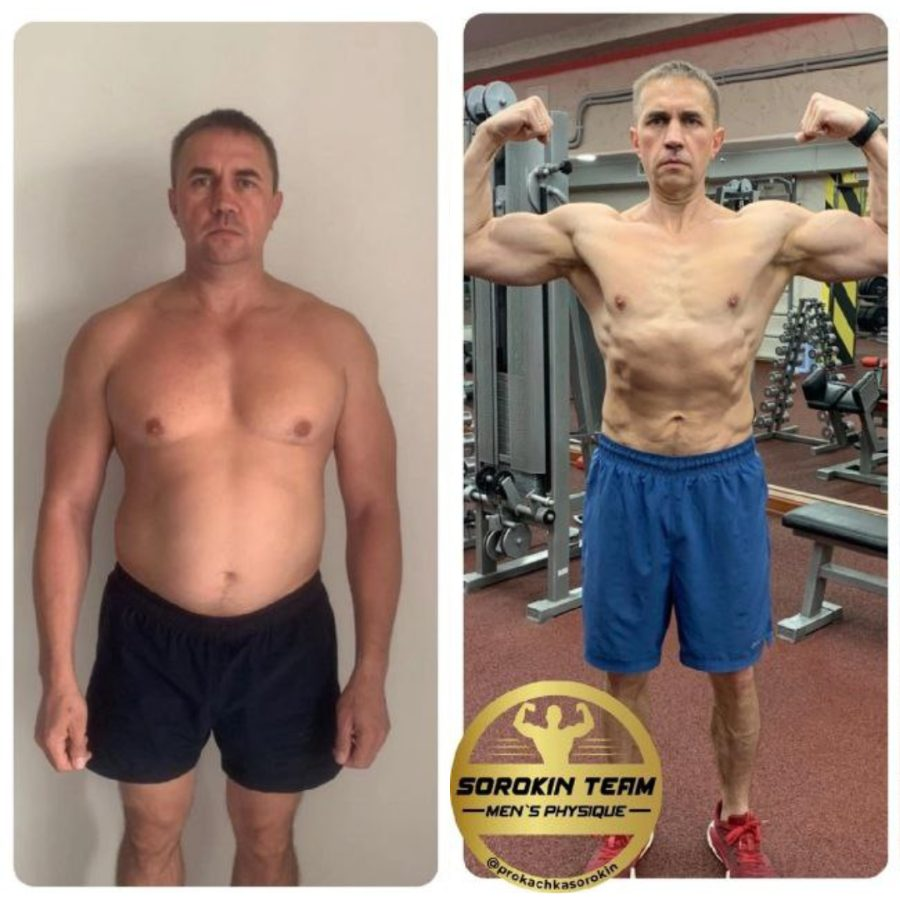
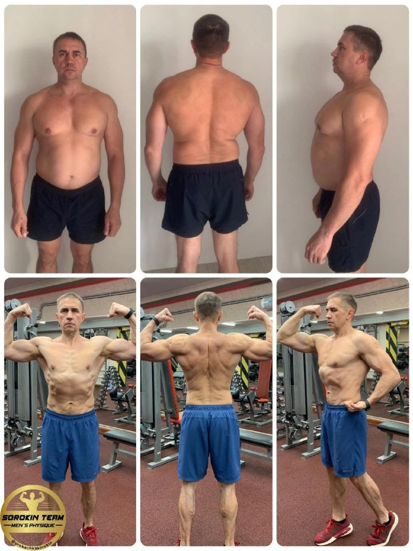
Был уверен, что после сорока без препаратов ничего не выйдет. Работали полностью натурально, 16 недель.


Живые разговоры с теми, кто уже прошёл путь
Не отзывы в рамочке, а интервью целиком: что мешало, что меняли и как это выглядело изнутри.
Что должно случиться в вашей голове
Механизм объясняет, почему у вас не получалось. Но он не объясняет, почему вы до сих пор ничего с этим не сделали. Есть три вещи, которые придётся сделать самому — без них не работает ни одна система, включая нашу.
Вы покупали программы, брали абонементы, читали исследования. Если бы это было не критично, вы бы ничего из этого не делали. Вам не противно тренироваться — противно тренироваться без результата. Дайте результат за три недели, и пропускать не захочется.
«Хочу» живёт годами и ничего не требует. «Решил» — это когда названа дата и вопрос «начинать или нет» закрыт. В работе и в семье вы принимаете решения каждый день. Тело — единственная область, где вы позволяете себе бесконечное «потом».
Аврал, перелёт, застолье, неделя без сна — такой день будет. Вопрос не в том, случится ли это, а в том, что вы сделаете. Наша задача — чтобы в этот день у вас был не выбор «делать или бросить», а готовый облегчённый вариант. Ваша — не исчезнуть.
Меньше этого не бывает нигде. Больше этого мы не просим.
Как мы работаем
Три этапа: найти узкое горлышко, собрать систему под него, встроить её в вашу жизнь.
Диагностика
Шаблонных схем у нас нет: начинаем с поиска узкого горлышка. Смотрим не на то, «правильно ли вы питаетесь», а на то, что конкретно блокирует результат — гормоны, ЖКТ, реакция на продукты, восстановление, нагрузка и стресс.
Базовая панель у всех примерно одна, дальше добавляем то, что нужно именно вам. Сдаёте там, где удобно. Результаты разбираем развёрнуто: не бланк с отметками «норма», а объяснение, какой показатель вас держит и что с ним делать.
Ядро
Когда ясно, что заблокировано, собираем систему под это. Готовую взять нельзя: из 8 млрд людей нет ни одного с точно таким же организмом, как у вас.
Шаблон не работает не потому, что он плохой, а потому, что он не про вас. В одно решение сводим питание, ЖКТ, движение и восстановление — с учётом графика, поездок, стресса и того, как вы устроены: одному нужна цифра и челлендж, другой на нём выгорает; один держится на контроле, другого контроль раздражает.
Стартуем с того количества тренировок, которое вы реально выполните. Обычно это две или три: система, которая не выполняется с первой недели, не работает вообще.
Адаптивность
Здесь план внедряется в вашу жизнь. Аврал, перелёт, застолье, неделя без сна: план подстраивается, а не ломается. Вам не придётся выпадать и начинать заново.
Каждые две-три недели включаем умное чередование нагрузки, чтобы тело не привыкало и прогресс не вставал. Если важно понимать логику — объясним: почему такой калораж, почему сейчас работаем с ЖКТ. Кому-то это нужно, кому-то мешает: скажите, как удобнее, и подстроимся.
В конце разбираем весь цикл: что сработало именно у вас, как изменились анализы, форма и состояние.
Первая неделя уходит на анализы: вы сдаёте, мы разбираем, собираем систему. Работа начинается тогда, когда у вас на руках готовый план.
Кто с вами работает
За вами закрепляется конкретный человек из команды. Ведёт весь цикл: видит отчёты, меняет план под состояние, собирает в одно решение всё, что находят остальные.
Отдельный человек, а не тренер «по совместительству». Читает анализы, находит то, что не видно снаружи, и работает со специалистом в связке. Мы работаем с ним не первый год.

Автор метода «Ползунка», абсолютный чемпион Arnold Classic, 14 лет практики. Система, по которой работает команда, — его.
Работа с командой не является медицинской услугой. Разбор анализов и рекомендации носят информационный характер и не заменяют консультацию лечащего врача.
Два формата. Разница — в двух пунктах.
Оплата не сразу. Сначала короткий разговор: подбираем формат и фиксируем задачу. Ссылку на оплату специалист присылает в чате.
Полная система под ваш организм и специалист, который ведёт вас все 12 недель. План меняется по вашим отчётам.
Тем, кто умеет держаться сам между разборами: дисциплина есть, нужен грамотный план и контроль.
Всё то же самое, плюс ежедневный контроль и гарантия: работаем до результата, а не до конца календаря.
Тем, кто честно знает за собой привычку отпускать себя между контрольными точками, либо хочет максимум сопровождения.
Цифру мы не называем
У большинства задача сложнее, чем число на весах: убрать живот и при этом набрать мышцу. Вес может вообще не измениться, а выглядеть и ощущать себя мужчина будет иначе.
Пообещать минус 10 килограммов означает либо занизить, чтобы точно выполнить, либо назвать красивую цифру и подвести.
Поэтому на старте формулируем вашу задачу вместе и фиксируем письменно.
Через 12 недель сверяемся. Если задача не закрыта, даём себе ещё месяц и доводим без доплаты. Условие одно: вы делали свою часть — отчёты, анализы, план.
Начнём на этой неделе?
Сначала разговор и подбор формата. Оплата — после, ссылку присылает специалист. Первая неделя уходит на анализы.